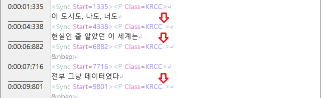
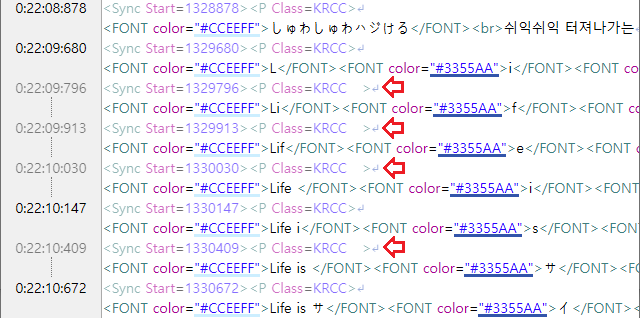
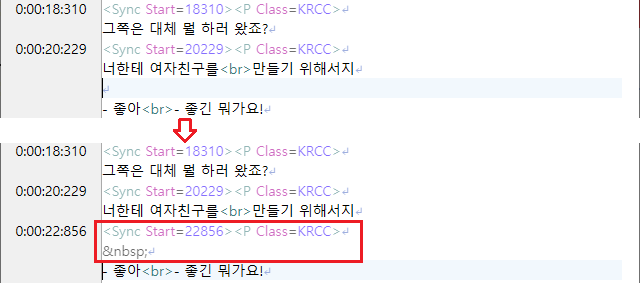
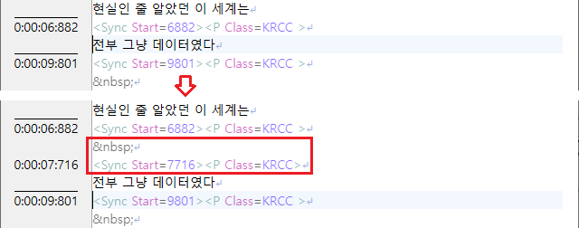

본 프로그램에선 일반적인 프로그램과 달리, 화면 싱크 기능이 존재합니다.
화면 싱크는 싱크 줄 맨 뒤의 닫는 꺽쇠(>) 앞의 공백문자로 구분되며
화면 싱크 매니저를 통해 프레임 단위로 정확히 맞출 수 있도록 지원합니다.

화면 싱크는 왼쪽의 싱크 표시 영역에 선을 그려줍니다.
그 외에, 탭문자로 중간 싱크를 체크하고 있으며
여러 줄에 대해 자동으로 중간 싱크를 생성하는 기능도 있습니다.
중간 싱크는 꺽쇠 앞의 탭문자로 구분되며, 필요 시 재계산됩니다.

중간 싱크는 왼쪽의 싱크 표시 영역에 점선을 그려줍니다.
덧붙여서, 싱크를 찍을 때 수치는 1ms 단위로 찍히지 않고
동영상 프레임 단위에 따른 보정이 들어갑니다.(설정 변경 가능)
종료 싱크 입력은 일반 싱크 입력처럼 하면 됩니다.
대사와 대사 사이에 공백 줄이 있을 경우, 싱크를 찍을 때 알아서 ' '를 생성합니다.

싱크 줄 바로 아래에서 끼워넣는 싱크를 추가할 때도 알아서 공백 싱크를 생성합니다.
